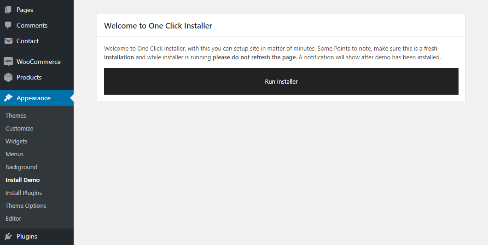
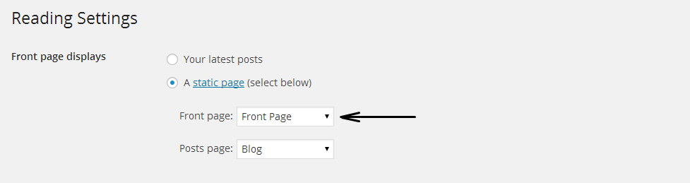
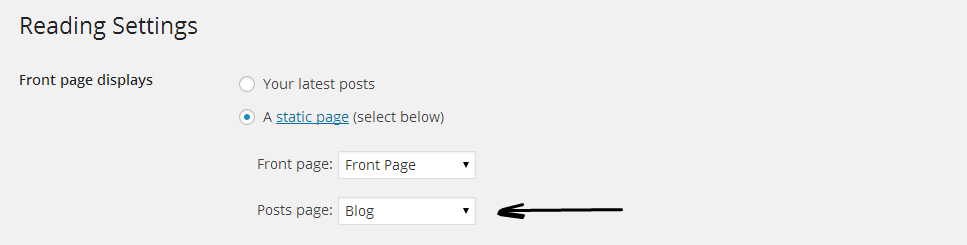
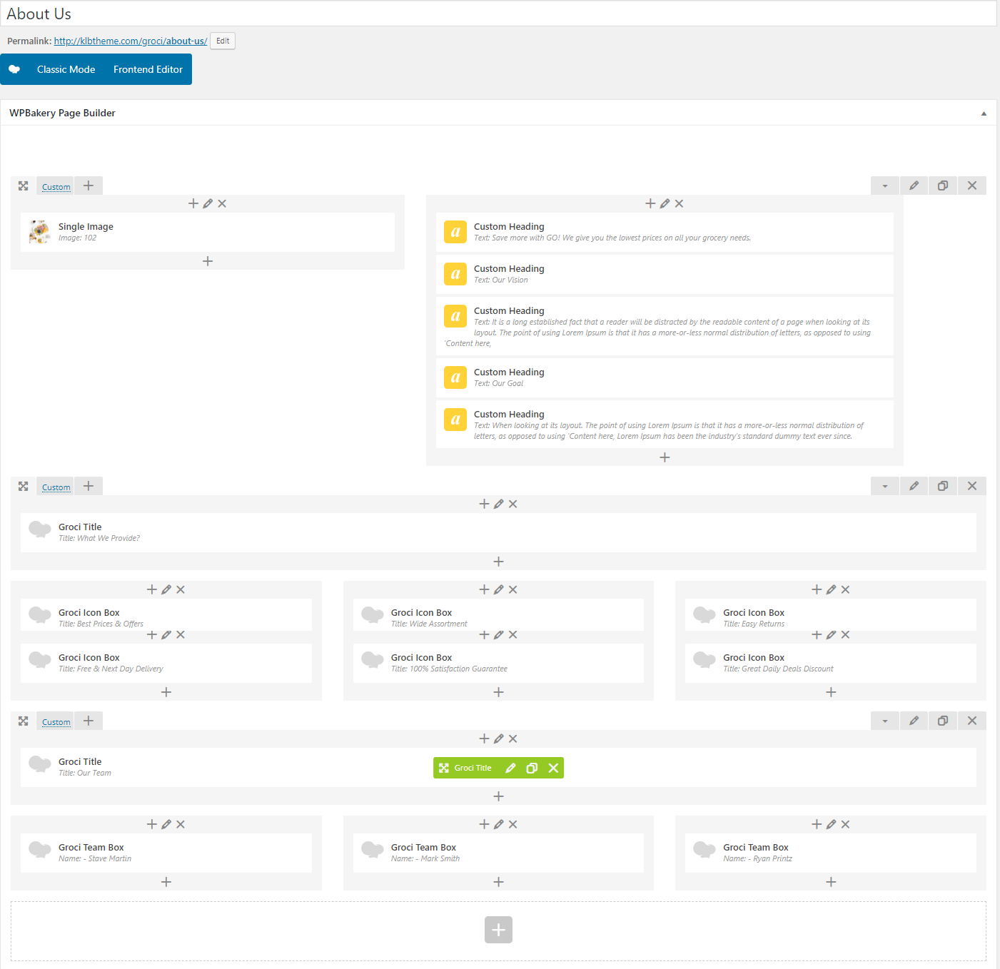
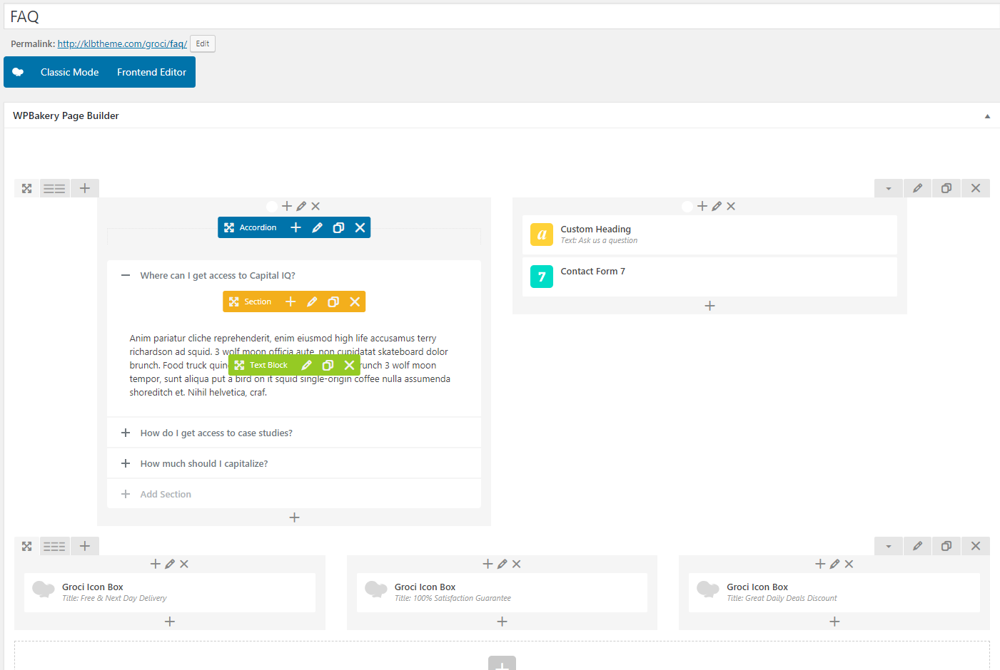
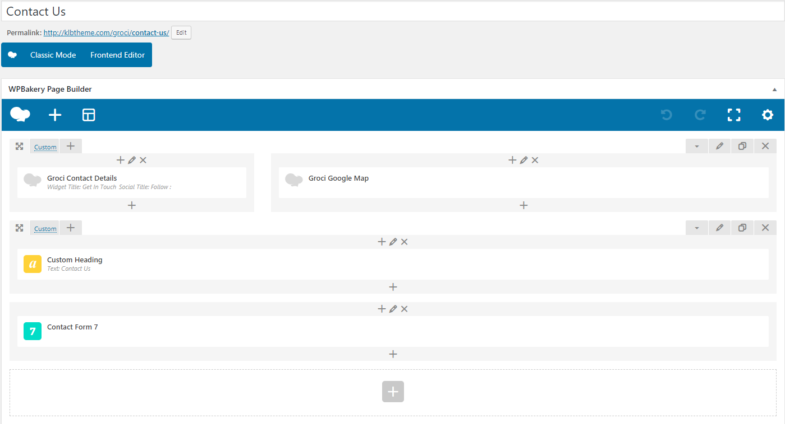
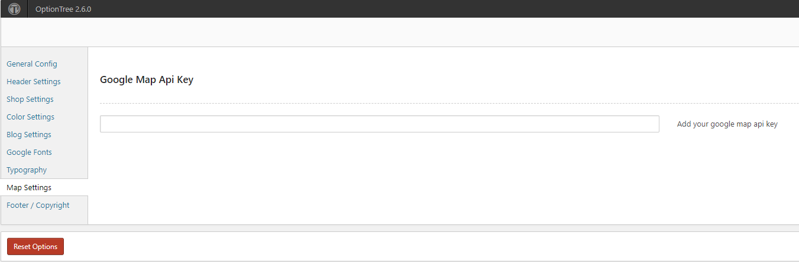

This document covers the installation and use of this theme and often reveals answers to common problems and issues -
we encourage you to read this document thoroughly if you are experiencing any difficulties.
If you have any questions that are beyond the scope of this document,feel free to pose them in the dedicated support forum.
You can either choose to upload the theme to your server via FTP (only upload the unzipped folder "Groci" into the folder wp-content/themes/ ) or using the WordPress upload function.
To use the upload function of the WordPress admin panel make sure to upload or extract ONLY the "Groci" folder or zip and not the whole archive file that you received from Themeforest.
If you are new to WordPress and have problems with theme you might want to check out this using theme instruction from wordpress.
Activate the "Groci" theme by selecting the Appearance > Theme tab and then activate.
After the theme activating, go to Appearance > Install Plugins. After installing of the plugins go Theme Option and click on Save Changes once. Now you can see initial Groci theme settings appear at front end.
Please make sure that you have activated the plugins before starting using the theme.
Follow the instructions; Dashbboard > Appearance > Install Plugins
Creating your website has never been much easier ever.If you would like to have your demo just like ours, all you need to do is just to click the 'One Click' demo importer. With the help of the 'one Click', your website will be seen like ours saving your time.You can also change easly any elements you wish on your website.
In order to work One Click Demo please follow these steps;
Wordpress Admin Panel > Appearance > Install Demo and Run Installer.
Important: Please deactivate WordPress Importer plugin from Dashboard > Plugins

To set up the Frontpage,you must first create a new page, you can do so by navigating to Pages > Add New.You can give this page a title of "Home"
Once you have created your new page,Go to Settings > Reading,Select "A static page" and assign the "Frontpage" for "Front Page:"
If you haven't applied these setting above,your frontpage sections will not be displayed.
To set up the blog,you must create a new page,you can do so by navigating to Pages>Add New.You can give this page a title of "blog" yet you do not have to include any content.Click "Publish".
Once you have created your new page,Go to Settings > Reading,Select "A static page" and assign the "blog" for "Posts Page:"
Your blog index is now created and can be viewed by visiting the page you just published.
To create a new page, you can do so by navigating to Pages>Add New.
You should use Visual Composer plugin to customize your own pages easly.
To create the Home Page,create a new page,you can do so by navigating to Pages > Add New. Please use visual Composer's Backend Editor.
To create a About page,create a new page,you can do so by navigating to Pages > Add New. Please use visual Composer's Backend Editor.
To create a FAQ page,create a new page,you can do so by navigating to Pages > Add New. Please use visual Composer's Backend Editor.
To create a Contact page,create a new page,you can do so by navigating to Pages > Add New. Please use visual Composer's Backend Editor.
Note: You can create a contact form through Dashboard > Contact > Add New.
To set a Google Map api key; Go Dashboard > Appearance > Theme Options > Map Settings.
You can ask your question on http://klbtheme.ticksy.com/
Again, thank you for purchasing Groci - Coupons, Deals, Discounts & Promo Codes WordPress Theme. If you need some help, or support please use email or contact form via themeforest profile site.
Hope you happy with the theme, all the best with your business.
{kind=link}
{kind=link}
{kind=link}
{kind=link}
{kind=link}
{kind=link}
{kind=link}
{kind=link}
{kind=link}
{kind=link}